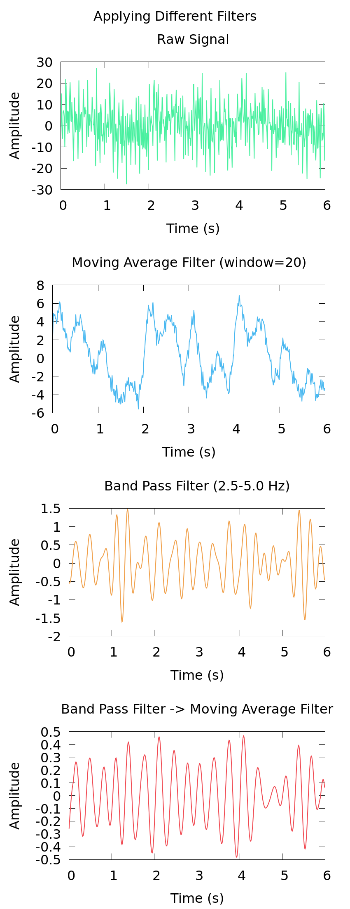

|
Signal Analyzer
|
A C++ project implementing a basic signal processing pipeline using object-oriented design. Generates a synthetic noisy signal and applies filtering via a moving average or band-pass filter. The band-pass filter implements a naive Discrete Fourier Transform (DFT) and inverse DFT to isolate frequency components of interest.
Signal with pure virtual describe() enforcing a common interface across all signal typesprocess() and describe() with type-specific behaviorSignal* — runPipeline operates on any signal type without knowing the concrete type at compile time.cpp files, keeping headers leanstd::mt19937, std::normal_distribution)freq = k * (sampleRate / N)The naive $O(N^2)$ DFT is implemented directly rather than using a library, to demonstrate understanding of the underlying algorithm:
$$ X[k] = \sum_{n=0}^{N-1} x[n] \, e^{-i2 \pi k n / N} \quad \text{(forward)} $$ $$ x[n] = \frac{1}{N} \sum_{k=0}^{N-1} X[k] \, e^{i 2\pi k n / N} \quad \text{(inverse)} $$
In production, this would be replaced with an optimized FFT library such as FFTW or Intel MKL.
add_compile_options(-Wall -Wextra) applied globallysignal_lib, linked against the process executableCMAKE_EXPORT_COMPILE_COMMANDS=ON for Cppcheck integrationcompile_commands.json for accurate analysis with full compiler contextThe build commands can also be run using the provided shell script,
There is a Makefile in which build and clean are defined. The executable can be generated by running,
Executable is written to bin/process.
This command can also be run via
or
Running the pipeline on a signal composed of five sine wave components (1, 2, 3, 10, 20 Hz) with amplitudes (1, 2, 3, 4, 5) at 100 Hz sample rate, 20 seconds duration, and noise level 1.0:
The moving average filter retains ~20% of signal energy, attenuating the 10 Hz and 20 Hz components whose periods fall at or below the 0.1 second averaging window. The band-pass filter isolates the 2 Hz and 3 Hz components, reducing energy to ~6% of the raw signal. The near-zero mean (-2.6e-16) in the band-pass output is expected floating point round-trip noise from the DFT/IDFT and confirms numerical correctness.
Here's a plot using a different main.cpp to show more complicated usage. The raw signal is passed to a moving average filter and a band pass filter separately, and also through a band pass filter then a moving average filter in succession. In this case the signal consists of eight sine waves (0.5, 1, 2, 3, 10, 20, 25, 30) with amplitudes (3, 1, 2, 1, 4, 8, 2, 5) at 100 Hz sample rate, 6 seconds duration, and noise level 5.0:

const std::vector<double>& pass by reference to avoid unnecessary copiesstd::complex<double> for DFT arithmeticstd::accumulate from <numeric>std::mt19937 and std::normal_distribution for random number generationstatic_cast<int> to avoid signed/unsigned comparison warningssize_t underflow wrapping.cpp files#ifdef compile guards for platform-specific alternatives@brief, @param, @return, @throws, @pre) on class and function declarations in headersstd::invalid_argument from <stdexcept> for input validation in constructors and utility functionsstd::exception base class catch-all in main for robust error reporting via std::cerrassert() from <cassert> for internal precondition checks in utility functions where input is caller-controlled@throws (caller-facing validation) and @pre (internal assertion preconditions) in documentation